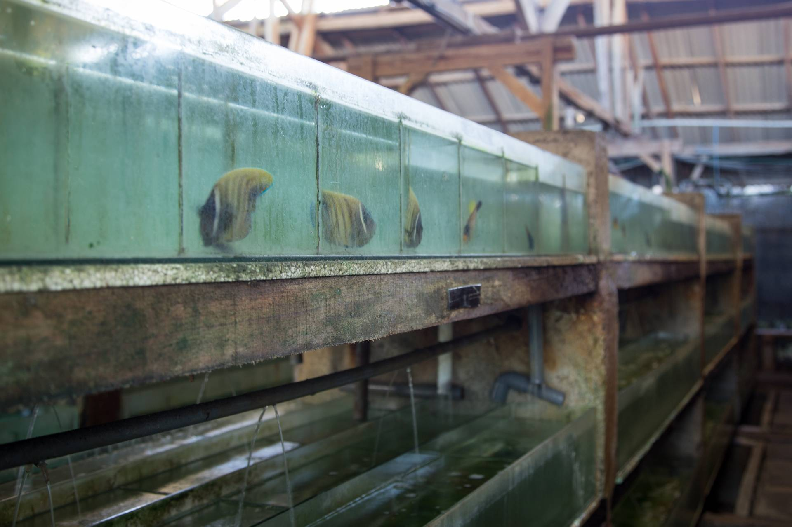

EXPORTERS
Bali is well known for its iconic beaches, rice paddies, yoga retreats and coral reefs, but behind the surf shacks and tourist traps exists a flourishing aquarium fish trade. Since 2004, over 12 million fish have been exported from Indonesia to the United States, with half heading to Los Angeles, a quarter to New York City and the remaining spread through major US cities. The iridescent green chromis (Chromis viridis) is the most popular fish transported from Indonesian waters, with the bright-red firefish goby (Nemateleotris magnifica), electric blue damselfish (Chrysiptera cyanea), and yellow cardinalfish (Ostorhinchus luteus) tagging close behind. Who is responsible for preparing and sending these fish on their trip across the globe? While collectors number in the thousands in Indonesia, only a handful of global exporters like Conrad Chen exist. Conrad owns and operates Bali Double C, a large-scale exporter of reef fish, invertebrates, crustaceans, molluscs and live coral based in Denpasar, Bali.
Forward-thinking exporters, like Conrad, keep detailed records of where there fish come from and how they were caught. Increasingly, this means skipping the step of the middleman and sourcing directly from the fishermen whenever possible. An exporter we met in the Philippines, Barnett Schutman, who owns and operates RVS Fishworld, has taken this approach as well, developing sub-stations across the country where his team collects fish from fishermen they have trained in sustainable harvesting methods. In Indonesia, Conrad works closely with a local NGO, the Indonesian Nature Foundation (LINI), which has developed programs to train fishermen in harvesting methods that are safer for both the fish and themselves.
“Because the way to catch fish is improving with training for the fishermen, we see the quality of the fish getting better the last couple of years”
– Conrad Chen
Dory is what Conrad’s customers call an “advanced fish”. An ideal blue tang aquarium would be at least 150 gallons to support this fish that can grow up to one-foot long. Blue tangs also require specific foods that mimic their natural diet. At Bali Double C, dozens of large tanks are meticulously filtered and filled with blue tang awaiting their departure for cities across the globe. The majority are destined for Los Angeles for redistribution to US pet stores. As an exporter for over a decade, Conrad has seen much change in the aquarium industry, and his facilities reflect this. Demand from the United States steadily inclined from the late nineties until the financial crisis of 2008, when the average consumer lost their appetite for a costly aquarium hobby. Today, the trade is recovering with emerging markets. China’s demand, for example, is expanding rapidly, and over the past twenty years, the global marine aquarium trade has grown five times over, shifting from a fringe-hobby to a global phenomenon.
From Bali Double C, workers will re-bag and re-box Dory in preparation for transcontinental flights, typically following a flight path from Denpasar, Indonesia to the United States by way of a major flight hub like Hong Kong International or Singapore Changi Airports. The export of aquarium fish catapults local catch into a global product wanted by millions of people around the world, but nowhere more than Los Angeles, California–our next stop in Dory’s journey.
-

An employee checks tanks at Bali Double C export facility in Denpasar, Bali
Photo: Caleb Kruse -
Conrad Chen, owner of Bali Double C, goes to great lengths to ensure the facilities are well-maintained. This requires a great deal of maintenance and attention to keep all of the equipment running and the fish healthy
Photo: Caleb Kruse -
Blue tang that have made it to the export stage and will soon be used to fill orders from around the world
Photo: Shannon Switzer Swanson -
Newly arrived clownfish being acclimating to their new surroundings
Photo: Andrea Reid -
Blue Tangs awaiting shipment from the exporter's facility
Photo: Mikayla Wujec -
Employees oxygenate and pack the fish to fill orders
Photo: Shannon Switzer Swanson -

Bali Double C is a very-well maintained operation. Sadly, conditions in export facilities vary widely, as seen at another export facility in Denpasar, and there is little regulatory oversight
Photo: Caleb Kruse -
Often fish don’t make it past this point and are discarded.
Photo: Caleb Kruse -
The fish are boxed again and sent to Bali’s international airport
Photo: Shannon Switzer Swanson -
Once at the airport, the fish are inspected a final time and are set to begin their longest trip yet---most likely to Los Angeles in the U.S. or to importers in Europe, Hong Kong, or Japan
Photo: Shannon Switzer Swanson